HALF ADDER
A half adder is a digital logic circuit that performs binary addition of two single-bit binary numbers. It has two inputs, A and B, and two outputs, SUM and CARRY. The SUM output is the least significant bit (LSB) of the result, while the CARRY output is the most significant bit (MSB) of the result, indicating whether there was a carry-over from the addition of the two inputs.


 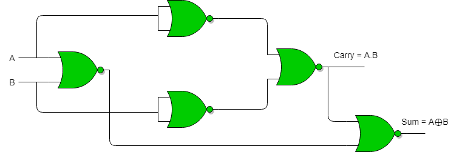
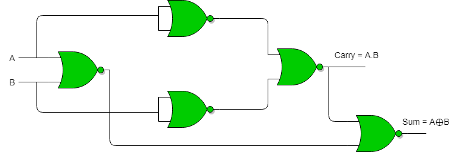
HALF SUBTRACTOR
A half subtractor is a digital logic circuit that performs binary subtraction of two single-bit binary numbers. It has two inputs, A and B, and two outputs, DIFFERENCE and BORROW. The DIFFERENCE output is the difference between the two input bits, while the BORROW output indicates whether borrowing was necessary during the subtraction.

FULL ADDER
Full Adder is the adder that adds three inputs and produces two outputs. The first two inputs are A and B and the third input is an input carry as C-IN. The output carry is designated as C-OUT and the normal output is designated as S which is SUM. The C-OUT is also known as the majority 1's detector, whose output goes high when more than one input is high.


FULL SUBTRACTOR
A full subtractor is a combinational circuit that performs subtraction of two bits, one is minuend and other is subtrahend, taking into account borrow of the previous adjacent lower minuend bit. This circuit has three inputs and two outputs. The three inputs A, B and Bin, denote the minuend, subtrahend, and previous borrow, respectively. The two outputs, D and Bout represent the difference and output borrow, respectively.
 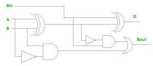
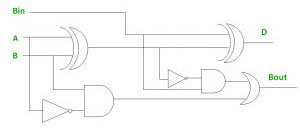
 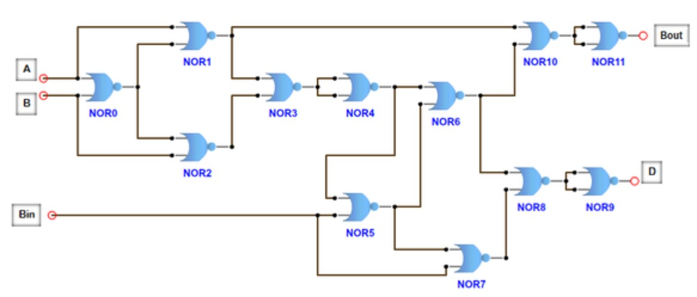
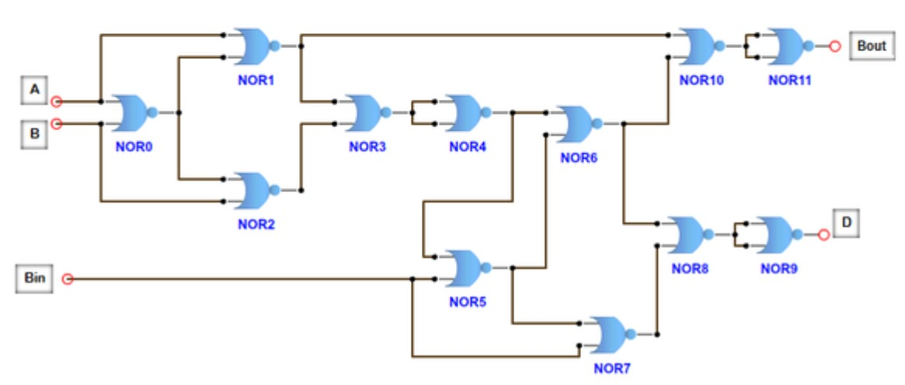
DECODER
The combinational circuit that change the binary information into 2N output lines is known as Decoders. The binary information is passed in the form of N input lines. The output lines define the 2N-bit code for the binary information. In simple words, the Decoder performs the reverse operation of the Encoder. At a time, only one input line is activated for simplicity. The produced 2N-bit output code is equivalent to the binary information.
 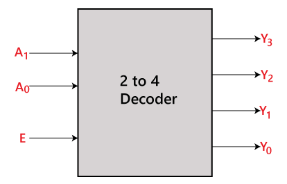
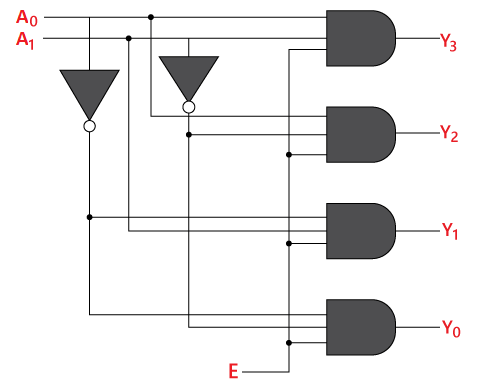
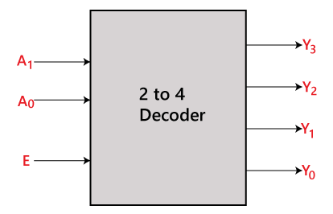
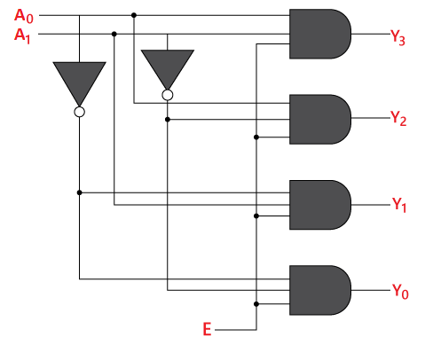
ENCODER
The combinational circuits that change the binary information into N output lines are known as Encoders. The binary information is passed in the form of 2N input lines. The output lines define the N-bit code for the binary information. In simple words, the Encoder performs the reverse operation of the Decoder. At a time, only one input line is activated for simplicity. The produced N-bit output code is equivalent to the binary information
 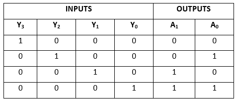
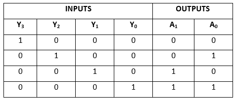


DEMULTIPLEXER
A De-multiplexer is a combinational circuit that has only 1 input line and 2N output lines. Simply, the multiplexer is a single-input and multi-output combinational circuit. The information is received from the single input lines and directed to the output line. On the basis of the values of the selection lines, the input will be connected to one of these outputs. De-multiplexer is opposite to the multiplexer.


MULTIPLEXER
A multiplexer is a combinational circuit that has 2n input lines and a single output line. Simply, the multiplexer is a multi-input and single-output combinational circuit. The binary information is received from the input lines and directed to the output line. On the basis of the values of the selection lines, one of these data inputs will be connected to the output. Unlike encoder and decoder, there are n selection lines and 2n input lines. So, there is a total of 2N possible combinations of inputs. A multiplexer is also treated as Mux.
 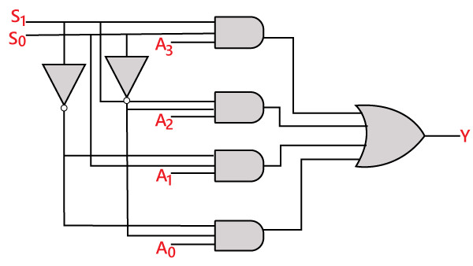
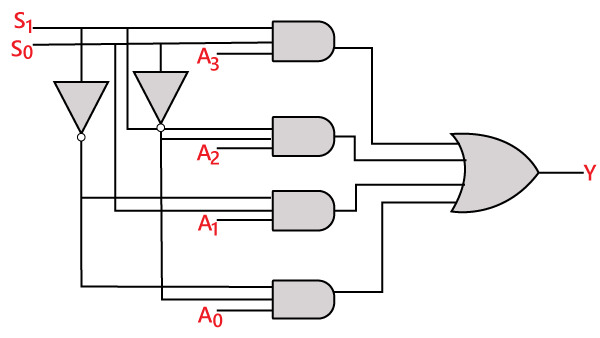
PARITY GENERATOR
It is combinational circuit that accepts an n-1 bit data and generates the additional bit that is to be transmitted with the bit stream. This additional or extra bit is called as a Parity Bit. In even parity bit scheme, the parity bit is ‘0’ if there are even number of 1s in the data stream and the parity bit is ‘1’ if there are odd number of 1s in the data stream. In odd parity bit scheme, the parity bit is ‘1’ if there are even number of 1s in the data stream and the parity bit is ‘0’ if there are odd number of 1s in the data stream. Let us discuss both even and odd parity generators.

 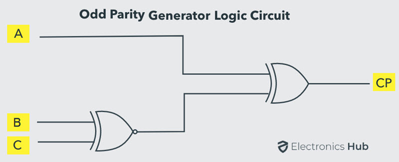
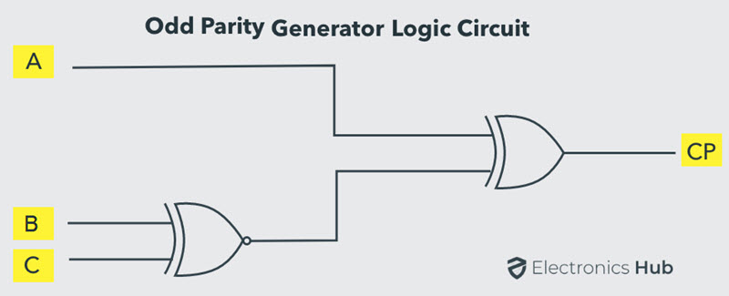
PARITY CHECKER
It is a logic circuit that checks for possible errors in the transmission. This circuit can be an even parity checker or odd parity checker depending on the type of parity generated at the transmission end. When this circuit is used as even parity checker, the number of input bits must always be even.
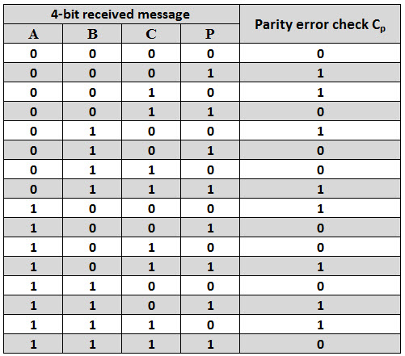 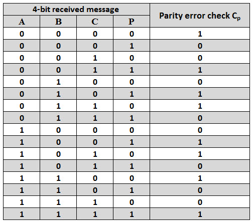
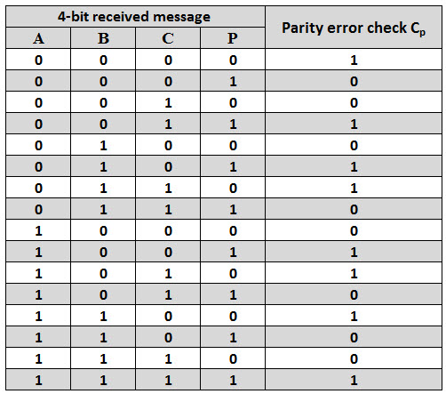